CS 1111
Introduction to Software Development
GWU Computer Science
Introduction to Software Development
GWU Computer Science
By the end of this module, for simple programs with real numbers, you will be able to:
If you do not have your Codio course ready, use any text editor or simple IDE. Some possibilities are:
Before we move forward, let's catch up (complete any remaining work from the previous module)
In this case, make sure we've got:
1 2 3 4 5 6 7 8 9 10 11 12 13 | public class CharCompare { public static void main(String args[]) { char ch1 = 'a'; char ch2 = 'b'; // Compare the chars if (ch1 < ch2) { System.out.println ("ch1 is alphabetically smaller"); } } } |
1 2 3 4 5 6 7 8 9 10 11 12 13 | public class StringCompare { public static void main(String args[]) { String s1 = "Cat"; String s2 = "Dog"; // Compare the Strings if (s1 < s2) { System.out.println (s2 + " is better than " + s1); } } } |
Consider this program:
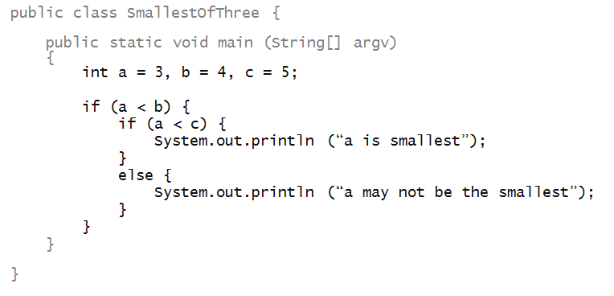
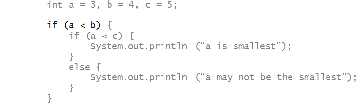
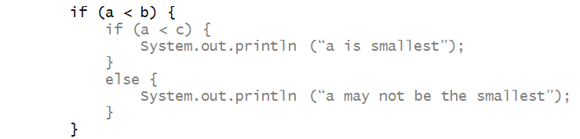
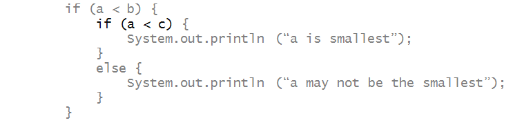

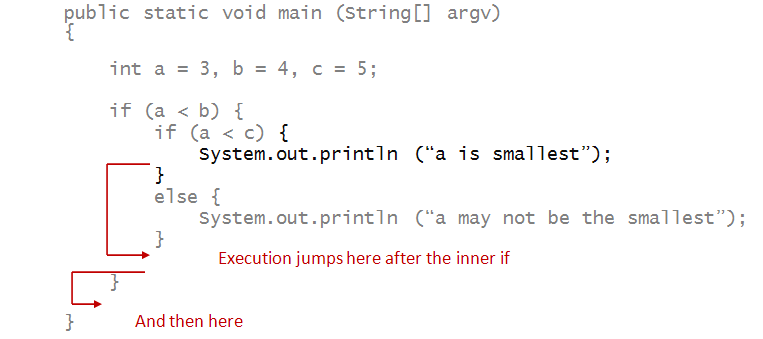
Consider this program:
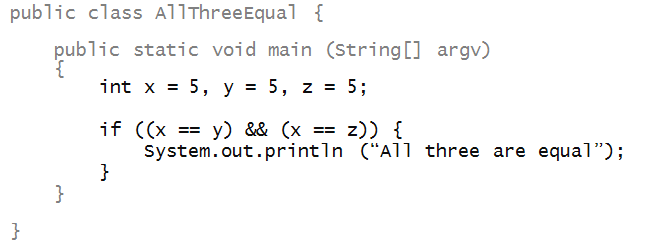
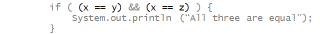
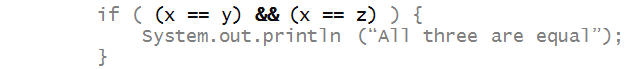
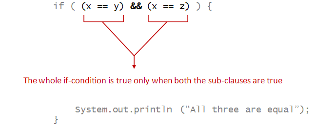
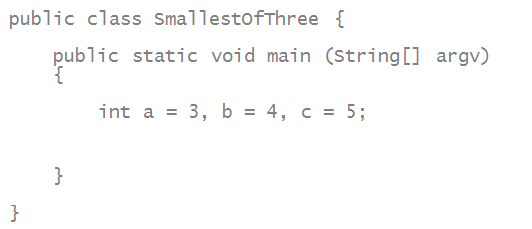
In MySmallestOfThree2.java,
use a two-subclause if-statement to identify
whether a is the smallest of the three.
Activity 3:
In MySmallestOfThree3.java,
extend this idea to identify which of the three
variables has the smallest value.
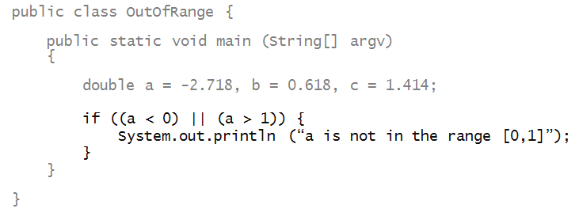
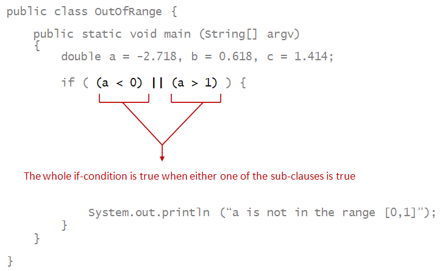
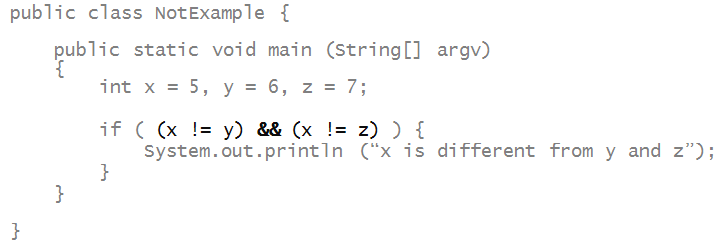
Activity 4: In MyNotExample.java, modify the above to determine whether all three variables have different values (no two of them have the same value).
The NOT operator can be applied to a larger clause made of sub-clauses:

( (a <= b) && (c+d > e) && (d > 1) )
( (a > c) || ( (c+1 < e) && (c-b > a) ) )
! ( (b == d-c) && (a > b) || (c < d) )
Try to evaluate each expression by hand.
Use the Java Visuailzer to see if the
result matches with your hand-evaluation.
We'll write a program to loop through a range of numbers, print the even ones:
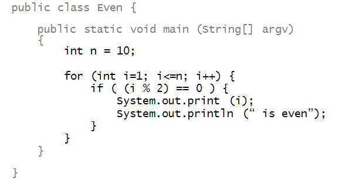
Activity 6:
Trace through the above program as i changes
in the for-loop.
Use the Java Visuailzer to see if the
result matches with your hand-evaluation.
Activity 7:
The above program only prints whether
i
is even.
In OddOrEven.java,
modify the above program to print, for every
i
whether i is odd or
whether it's even.
In the next example, we'll find the minimum of a function (approximately):
public class FunctionMinimum {
public static void main (String[] argv)
{
double min = 100;
for (double x=0; x<=1; x+=0.1) {
double f = 20 + 100 * (x*x*x - x*x);
if (f < min) {
min = f;
}
}
System.out.println ("min value of f = " + min);
}
}
A Menu in a terminal is a common tool to allow a user to choose from a set of executable actions. It is also the perfect test project to demonstrate the use of conditionals and user input.
Look at the following code:
1 2 3 4 5 6 7 8 9 10 11 12 13 14 15 16 17 18 19 20 21 22 23 24 25 26 27 28 29 30 31 32 33 34 35 36 37 38 39 40 41 42 43 44 45 46 47 48 49 50 51 52 53 54 55 56 57 58 59 60 | import java.util.Scanner; public class ExampleMenu{ public static void main(String[] args) { // to decide if we repeat or not boolean shouldRepeat = true; int scan = 0; // Records user input // FIRST USER CHOICE while ( true ){ System.out.println ("Choose 1, 2, or 3 ONLY:"); System.out.println ("======================="); System.out.println ("1. Go to Submenu 1"); System.out.println ("2. Repeat on purpose"); System.out.println ("3. Exit"); scan = userScan(); // Submenu 1 if (scan == 1) { shouldRepeat = true; int scanChoiceSub1 = 0; // Second user choice while (shouldRepeat) { System.out.println ("\nChoose 1 or 2 ONLY:"); System.out.println ("======================="); System.out.println ("1. Print \"Hello There!\" and go back"); System.out.println ("2. Go back to top menu"); scanChoiceSub1 = userScan(); // Print if (scanChoiceSub1 == 1) { System.out.println ("Hello There!\n"); } shouldRepeat = false; } }// End If submenu 1 // Exit if (scan == 3) { return; } // Note that there is no need for option 2, // since it is the same as the default: repeat menu } // End Top Menu While //System.out.println ("AFTER TOP MENU!"); } // Scanning method lessens overcrowding of code in main public static int userScan() { Scanner myScanner = new Scanner (System.in); String s = myScanner.nextLine (); int sAsInt = Integer.parseInt(s); return sAsInt; } } |
Activity 12:
In Codio, run "ExampleMenu.java" and answer the following questions:
There is a useful pair of reserved words for times where you want to do special actions when working with loops and conditionals. They are the words break and continue.
break: when execution encounters this reserved word, the loop is stopped right there and then, and execution continues immediately AFTER the end of the loop block. This works both when using the while and for loops.
continue when execution encounters this reserved word, the loop skips this iteration of the loop, skipping the body of the loop, and execution continues at the beginning for the next iteration . This works both when using the while and for loops.
Activity 13:
In Codio, modify "ExampleMenu.java" in the following two parts:
1 2 3 4 5 6 7 8 9 10 11 12 13 14 15 16 17 18 19 20 21 22 23 24 25 26 27 28 29 | public class MyGCD { public static void main(String args[]) { int num1 = 81; int num2 = 153; // Invoke the GCD method and save result in gcd variable int gcd = myGCD(num1, num2); // myGCD(num1, num2) resolves into the gcd System.out.println ("The GCD of: " + num1 +" and" + num2 +"is "+ gcd); } public static int myGCD(int x, int y) { // The return variable int gcdSoFar = 0; // Get the smallest of the two numbers int minVal = Math.min(x,y); // find the maximum int that divides both x and y for(int i = 1; i <= minVal; ++i) { // Checks if i is factor of both integers if(x % i==0 && y % i==0) gcdSoFar = i; // No brackets!! (only for single-line for loops) } return gcdSoFar; } } |
Note the use of the Math library method "min", which can be found in the Math library API.
Activity 15:First, reading:
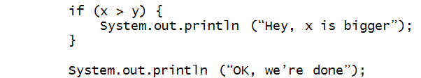
say to yourself:
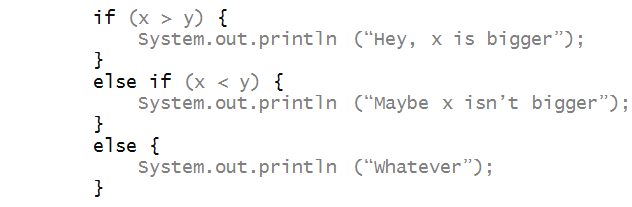
Say to yourself:
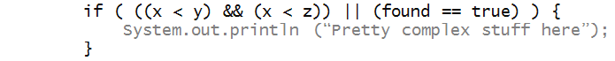
break it up into a hierarchical view:
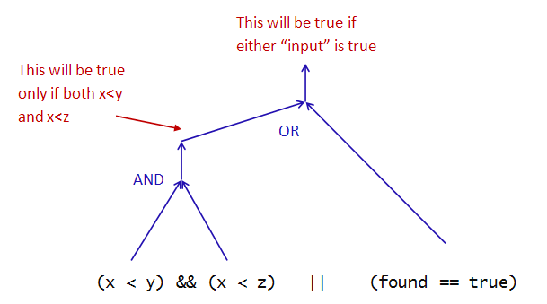
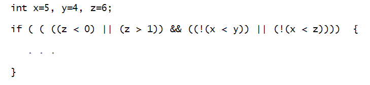
Then, evaluate it to see whether the result is true or false. Write down the true/false values at intermediate levels of the hierarchy. Writing:
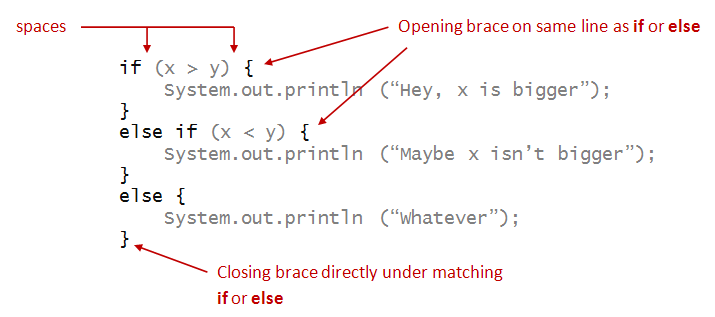
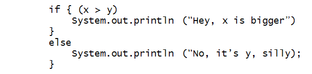
Activity 18:
Fix the errors in the if condition to make
this print "Success".
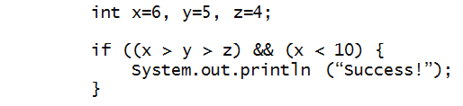
First, try to find the problems without compiling. Then, fix the code and see if you were right while reading.
This has been a challenging module: intricate code, with many moving parts, and looooong. A few things to keep in mind: